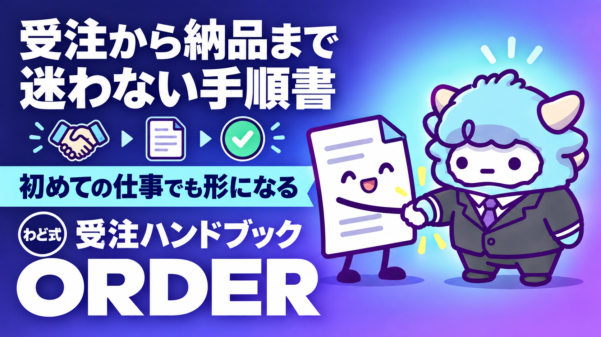

受注ハンドブック 領域非依存版
初回連絡から納品まで。第1〜6章
このページが特典の本体です。下へスクロールして使ってください受注ハンドブック（領域非依存版）
案件を探すところから、契約条件を確定させるところまで。「受ける／受けない」を自分の判断基準で決められるようになります。
はじめに
わどです。
「AIマネタイズ」の最初の一歩は、多くの場合「最初の1件」を取りにいくことから始まります。文章でも、画像でも、開発でも、動画編集でも、やることは同じです。募集を探し、受けるかどうかを判断し、提案し、条件を確定させる。この4つの動きだけです。
このハンドブックは、その工程を丸ごと1冊にしたものです。クラウドソーシング（主にクラウドワークスを想定）での受注を軸に、判断できる基準ごと渡します。多くの人がここで止まるのは能力の問題ではなく、「これは受けていい案件なのか」を判断する材料を持っていないだけです。
大事なことを先に言います。「作業ジャンルに依存しない」という意味で領域非依存であり、プラットフォームに依存しないという意味ではありません。 他のサービスにそのまま当てはめず、必ず公式ヘルプで最新のルールを確認してください。規約は変わります。ここに書いた内容は執筆時点で確認したものです。
もう一つ。この内容は法律の助言ではありません。契約のトラブルや未払いが起きたときは、第6章で紹介する窓口に相談してください。成果を上げることを保証するものでもありません。
この特典の進め方
受注は、次の5つの工程でできています。
- 案件を探す 2. 受ける／受けないを判断する 3. 提案する 4. 契約条件を確定する 5. 納品する・請求する・継続する
この特典では、1〜4を厚く扱います。ここが実際に人が止まる場所だからです。5（納品・請求・継続）はまだ実例が積み上がっていないため、第6章の終わりに要点だけ触れます。
正直に書いておきます。この内容の中心は、募集を探して自分から取りに行く「クラウドソーシング型」の受注です。SNSでの発信やコンテンツ販売から声がかかる形の受注（紹介・指名）は主役ではありませんが、第2章の判断基準と第6章の契約条件確定は、どんな入口の依頼にもそのまま使えます。
最初のゴール（今日やる1つ）
自分がやったことがある作業、やれそうな作業の名前で、案件を10件ざっと開いて、3件残す。
残す基準は第1章で説明します。まずは検索窓に言葉を打ち込むところから始めてください。
第1章 案件の探し方
目指す状態: 実際に募集されている案件を、自分の目で3件見つけて、URLで示せる状態。
発信やコンセプト設計から入ると「仕事が本当に存在するのか」が最後まで分からないまま進みます。先に募集案件を3件見てしまえば、そのあとが全部具体的になります。
- 探す場所を1つだけ決める（複数を同時に見比べない）
- 検索条件を絞る。やったことがある作業、やれそうな作業の名前で検索する
- 10件ざっと開いて、3件を残す。基準は次の3つ全部を満たすこと - 何を納品すればいいかが、募集要項を読んで具体的に想像できる - 報酬の決まり方が書いてある（何に対していくらか） - 発注者の過去の募集・評価・実績が見られる
- 残した3件について、求める成果物／自分に足りないもの／見送った7件の理由をメモする
| 状態 | 見方 |
|---|---|
| 3件残らない | 検索語や経験年数の条件を1つだけ外す。緩めていいのはここまで |
| 全部「できそう」 | まだ要件を読み込めていない。納品物を1文で言えるか確かめる |
| 全部「できなさそう」 | 第5章（実績ゼロのポートフォリオ）を先に読む |
緩めてよいのは検索語・ジャンル・経験年数・希望単価帯。緩めてはいけないのは仮払い・支払条件・権利・秘密保持・違法性（第2章・第6章）です。
合格ライン: 案件URLが3件ある／見送った理由が書いてある
第2章 受けてはいけない案件の見分け方
ここが本書でいちばん大事な章です。
この章は2種類の情報でできています。公式ルール（仮払い前の作業・無報酬テスト・外部連絡・評価の仕組みなど。判断の基準にしてよいが規約は変わる）と、体験談（実際に遭遇した進み方の報告。パターンの参考にし、相手の意図を断定する根拠にはしない）です。
「いくつ当てはまったらNG」という数え方はしません。1つで即やめるべきものと、確認すれば進めていいものがあります。
| 段階 | 意味 | 出会ったら |
|---|---|---|
| 🔴 即停止 | それ以上進めない | 作業しない・情報を渡さない・その場で降りる |
| 🟡 保留 | 文字で確認が取れるまで進めない | メッセージで質問。答えが返らなければ降りる |
| ⚪ 通常確認 | 気に留めておく | 単独では判断材料にしない |
🔴 即停止（1つでも該当したら降りる）: 仮払い完了前に作業・納品を求められる／無報酬のテスト・課題を求められる／プラットフォームの外で契約・支払いをしようとする／ログインID・パスワード・認証コードの共有を求められる／銀行口座やカード情報を支払い設定以外の場所で求められる／業務内容が違法・規約違反・権利侵害（他人の著作物・肖像・音声の無断使用、なりすまし、偽レビューなど）／メッセージ内のリンク先がプラットフォームの正規ドメインと一致しない。
「トライアル」「テストライティング」という名前でも、作業に対しては契約と報酬が必要です。無報酬での提出を求められたら、それだけで降りる理由になります。
🟡 保留して確認するパターン
| 型 | 進み方 | 対応 |
|---|---|---|
| トライアルが終わらない | 成果物提出→中間提出→長期放置→前回指摘のなかった箇所に修正→次の返答なし | 仮払い時期・合格基準・修正回数の上限・検収期限を先に文字で確認する。答えない相手は納品後も答えない |
| 採否・評価がつかない | 検収されるが採否連絡なし。「トライアルなので評価なし」と通知 | 検収完了から一定期間は評価入力できる仕組みが多い。意図を決めつけず期間内に自分の評価を入れる |
| 提示条件と実際が違う | スカウト時の上限額と初回条件が大きく離れる | 上限額は判断材料にせず、初回に確定する条件だけで判断する |
| 外部でのやり取りを求められる | 無承認で外部誘導される、外部で契約・支払いをしようとする | 承認手続きを取る。契約・仮払い・検収・支払いを外部でやろうとするのは🔴。合意内容はメッセージに書き戻す |
| 仕事に見せかけた勧誘 | 「実績作り」「スキルアップ」を謳って高額講座やSNSグループへ誘導 | 「実績作りになります」を発注者側が言ってきたら🟡保留。実績は結果として付くもの |
| フィッシング | 「お支払い済み」の通知＋リンク。ドメインが正規と微妙に違う | アプリ内で確認しリンクは踏まない。通報する |
⚪ 通常確認: 完了率が低い（定義に注意。契約のうち途中終了せず検収完了に至った割合で、採用率ではない。閾値は置かず他の材料と合わせて見る）／検収が早すぎる・返信が遅い（意図を推測せず、合意した期限から外れているかだけを見る）／評価件数が少ない（新規発注者かもしれない。仮払い・契約条件で自分を守る）。
相手の性格を当てにいかず、合意した条件からの逸脱だけを見るのがいちばん外れにくい見方です。
合格ライン: 気になった案件を🔴🟡⚪のどれかに分類し、根拠を説明できる
第3章 契約前に個人情報・面談・秘密保持契約を求められたときの判断
面談や個人情報の提出を求められただけで止まってしまう人がいます。求められること自体は珍しいことではなく、むしろ手続きをきちんとしている証にもなります。ただし、求めてきた事実だけで相手を信頼していい意味ではありません。「面談」は仕事に見せかけた勧誘の入口にもなるため、次の6項目で判断します。
| # | 見る項目 | 進めてよい状態 | 止める状態 |
|---|---|---|---|
| 1 | 外部連絡の承認 | 申請・承認を経ている | 無承認のまま外へ誘導される |
| 2 | 契約・仮払いの状態 | 成立・完了の後に作業する | 仮払い前に作業・納品を求められる🔴 |
| 3 | 求められる情報 | 契約・支払いに必要な範囲 | 認証情報・カード情報が含まれる🔴 |
| 4 | 利用目的の説明 | 何にいつまで使うか説明できる | 説明を避ける、話をそらす |
| 5 | 記録 | 合意内容がサービス内に残る | 口頭・外部チャットだけで決まる |
| 6 | 業務との必要性 | 本当に必要な範囲 | 業務と関係ない情報・アカウントを求める |
氏名・住所は契約・支払いに必要な範囲なら通常の手続きです。秘密保持契約を結ぶ場合は双方の氏名・住所が相互開示される点も理解しておいてください。ログイン情報・認証コード・支払い設定以外での口座情報は🔴即停止です。
署名前に読む7項目: 目的／秘密情報の範囲／除外事項／期間／損害賠償の上限／AI利用の可否（受け取った情報を生成AIに入力してよいか）／ポートフォリオ利用の可否（実績として見せてよいか）。分からない条項があれば署名せずに確認してください。
受ける前に必ず文字で聞く3つ: この面談はどの工程について話す場か／お預かりする情報は何にいつまで使われるか／採否はいつ・どこで連絡されるか。答えが返ってこない、話をそらされる場合は降りてください。
AI案件で追加確認: 顧客データの外部AI入力は明示の許可がない限り入れない／生成物の著作権・商標・肖像・音声の権利／AI利用の開示が必要かを確認する。
合格ライン: 求められた手続きを6項目のどれかで説明でき、秘密保持契約は7項目を読んでから署名すると決めている
第4章 提案文
目指す状態: 募集要項の要求と1対1で対応している提案文を1通書き切ること。
AIが書けるのは「一般的にうまい提案文」で、他の応募者も同じものを出しています。差がつくのは、募集要項の固有の条件に個別に答えているかどうかだけです。
- 募集要項を分解する（先に読む、先に書かない）。求める成果物／必須条件／歓迎条件／納期・分量／発注者が困っていそうなこと、を原文のまま抜き出す
- 各行に自分の答えを1行ずつ付ける。満たせない条件は「満たせない」と書く。必須条件は1つでも満たせないなら原則見送り、歓迎条件は満たせなくてよい
- 提案文の形にする: できることを最初に書く（募集要項の言葉を使う）→必須条件に要項の順で答える→満たせない条件は正直に書き代わりを添える→ポートフォリオ（第5章）を1点添える→着手可能日と連絡目安を書く
- 出す前にチェック: 必須条件が全部登場しているか／自分の話が相手の要求より先に来ていないか／他の案件にも使い回せる汎用文になっていないか
合格ライン: 必須条件が全部1対1で対応し、満たせない条件を隠していない
第5章 実績ゼロで出せるポートフォリオ
目指す状態: まだ受注していない状態で、提案文に添えられる成果物を1点作ること。
「実績がないから応募できない」→応募しないから実績ができない、という構造の問題です。第1章で残した3件のうち1件の要件を参考に、架空の設定で成果物を1本作って外します。
| やってはいけない | 理由 |
|---|---|
| 実在する発注者名・企業名・ロゴ・商品名を使う | 権利侵害・信用毀損になりうる |
| 実案件の素材・原稿・機密情報を使う | 秘密保持契約違反になりうる |
| 実在の人物の顔・声を使う | 肖像・パブリシティの問題 |
| 利用条件を確認していない素材・生成物を使う | ライセンス違反になりうる |
| 受注していない案件を「実績」として書く | 経歴の詐称にあたる |
発注者名・案件の固有情報は架空に置き換え、「◯◯という条件を想定して自主制作しました」と明記します。完成品は1点だけ。数を増やしません。noteの記事やXのプロフィール・投稿にまとめておくと、応募していない発注者からも見てもらえる形になります。
合格ライン: 完成品が1点あり、第1章の要件に対応し、自主制作と明記され他人の権利を使っていない
第6章 契約条件を確定する
目指す状態: 作業を始める前に、決まっていることと決まっていないことを文字で確定させること。
着手前チェック（全部にチェックが付くまで作業しない）: 1. 成果物（何を・いくつ・どの形式で）／2. 報酬額と手取り／3. 納期／4. 検収の方法と期限／5. 修正の範囲と回数の上限／6. 追加作業の扱い（別料金か範囲内か）／7. 途中で終わる場合の扱い／8. 成果物の権利（ポートフォリオに載せてよいか）／9. 秘密保持（AI利用の可否）／10. 支払期日／11. 仮払いが完了している🔴
書面（メッセージでよい）に残っていない項目は決まっていないのと同じです。口頭で決めたことは必ず文字にして相手にも確認してもらってください。
単価の相場はこの特典では扱いません。ただし割に合うかは相場を知らなくても計算できます。
手取り = 報酬額 − 手数料 − 税
総所要時間 = 作業 + 調査 + 打ち合わせ + 修正対応 + 応募にかけた時間
1時間あたり = 手取り ÷ 総所要時間
修正対応と打ち合わせの時間を入れ忘れると実際の見え方と大きくずれます。最初の数件は実測を記録し、見積もりとの差を次の判断材料にしてください。
業務委託の取引条件は書面等での明示や支払期日の設定が法律上求められる場合があります。制度は公的機関の案内で確認し、「契約書があるか」より上の11項目がそろっているかで見てください。
困ったときの相談先: 規約違反・不審な案件はプラットフォームの運営／未払い・トラブルは公的なフリーランス相談窓口（無料のものがあります）／法的判断が要る問題は弁護士等の専門家。トラブルが起きたらメッセージ・契約画面・納品物・日時をまず記録してください。
納品から先について、正直に: 納品・請求・継続の型はまだ厚く書けていません。実例が十分でないためです。納品連絡には納品物・対応した要件・確認してほしい点・次の予定を必ず入れ、検収が止まったら着手前チェック4の期限に照らして確認してください。継続にしたいときは、単発を終える段階で「今後も継続できそうか」を先に聞いておくと話が早いです。
合格ライン: 着手前チェック11項目が文字で確定し、割に合うかを自分で計算した
最新AI（2026年9月時点）での変わり目
2026年9月、OpenAIが新しい大規模モデルを発表しました。画面の情報を読み取り承認された画面を操作する「コンピュータ操作」が主な特徴で、パソコン操作系のベンチマークで前世代より高い成績が報告されています（取得日: 2026-09-06）。
受注の場面への関わり方は2つです。1. 案件探しの下読みを手伝わせる: 募集要項を読んで絞る作業は一次スクリーニングをAIに任せられますが、「受ける／受けない」を決めるのは自分です。第2章の判断基準を丸投げしないでください。2. 画面操作AIを使うときの注意: 画面に映った内容をそのまま指示として読み取ってしまう可能性があると指摘されています（取得日: 2026-09-06）。フィッシング（第2章）のような偽の画面を読ませると意図しない操作をする恐れがあるため、見せる画面を選んでください。
コンピュータ操作は段階的に公開中で、環境によって使える範囲が異なります。「使えるはずのAI」に依存せず、まずは自分の手で第1〜6章の判断ができる状態を作ってください。
Claude Codeのような環境で提案文の下書きや契約条件のチェックを自動化したいなら、導入の最初の一歩は別の特典「Claude Code 最初の30分」にまとめています。受注作業をAIに任せる仕組みを作りたくなったら「AI社員1人目」の特典が次の一歩です。
最初に投げるプロンプト
これから、私に「最初の1件」を取りに行くお手伝いをしてもらいます。
私の状況は以下の通りです。
・得意なこと／経験:【箇条書きで】
・使えるAIツール:【ChatGPT／Gemini／Claude のどれでも】
・受注経験:【あり／なし】
・今探している案件のジャンル:【】
まず、私に5つ質問して、上記の空欄を埋める手伝いをしてください。
その後、募集要項を1件貼るので、
・求める成果物 ・必須条件 ・歓迎条件 ・納期/分量 ・発注者が困っていそうなこと
の5項目に分解してください。推測が入る項目は「推測」と明記してください。
よくある失敗 7つと直し方
- 募集要項を読まずに提案文を書き始める → 先に必須条件・歓迎条件・納期を抜き出してから書く
- 仮払い前に作業や納品をしてしまう → 「仮払い完了」を自分の目で確認してから着手する
- 「実績作りになる」という言葉だけで無報酬の作業を受ける → 無報酬のテスト・課題は断る理由にする
- 面談や秘密保持契約に怖くなって応募自体をやめる → 第3章の6項目で判断する
- 口頭・通話で決めたことをそのままにする → 必ずメッセージに書いて相手にも確認してもらう
- 修正の上限を決めずに作業を始める → 着手前に自分から上限を提示する
- 実在する企業名や他人の素材でポートフォリオを作る → 架空の設定で自主制作しその旨を明記する
安全に使うための注意
- お金が動く前に作業・納品をしない。着手前チェックが確定してから作業を始める
- 無報酬のテスト・課題は受けない。「実績作りになる」だけで無償の作業を求める相手には注意する
- ログインID・パスワード・認証コードを渡さない。範囲を超えた情報を求められたら確認するか断る
- 決まったことは文字に残す。口頭・通話だけの合意はメッセージやメールに書いて確認してもらう
- 秘密保持契約は中身を読んでから署名する。AIツールへの情報入力の可否は必ず確認する
- 困ったときはプラットフォームの窓口や公的な相談窓口に相談する。この特典は法律の助言ではない
つまずいたときに聞くプロンプト
- 提案文を出しても通らない: 「直近5件の提案文と募集要項を貼ります。共通してどこが弱いか、条件との対応関係だけを見て指摘してください」
- 受けていい案件か迷う: 「この募集要項（下記）を読んで🔴即停止・🟡保留・⚪通常確認のどれに当たりそうか、根拠と合わせて教えてください」
- 秘密保持契約が難しくて読めない: 「この契約書（下記）から目的・秘密情報の範囲・期間・損害賠償の上限・AI利用の可否を抜き出し一言で要約してください」
- 割に合うか分からない: 「この条件（下記）で手取り・総所要時間・1時間あたりの金額を計算してください。分からない項目は空欄のままにしてください」
用語集
- 提案文: 募集に対して自分から送る応募のためのメッセージ
- 仮払い: プラットフォームが発注者から報酬を一時的に預かる仕組み
- 検収: 納品物を相手が確認し合否を判断すること
- 秘密保持契約: 業務で知った情報を外部に漏らさない取り決め
- ポートフォリオ: 自分のスキルを示す成果物。受注経験がなくても自主制作でよい
- 着手前チェック: 成果物・報酬・納期・検収・修正範囲などを文字で確定させること
- 完了率: 契約のうち途中終了せず検収完了に至った割合。採用率とは異なる
出す前の品質チェック（10項目）
- 気になる案件を🔴🟡⚪のどれかに分類できているか
- 分類の根拠を募集要項や実際のやり取りの記述で説明できるか
- 仮払いの状態を自分の目で確認したか
- 面談・秘密保持契約を6項目のどれで判断したか説明できるか
- 秘密保持契約の中身を読んでから署名すると決めているか
- 提案文の必須条件が全部1対1で対応しているか
- 満たせない条件を隠さず正直に書いているか
- ポートフォリオが自主制作であることを明記しているか
- 着手前チェック11項目が文字で確定しているか
- 割に合うかどうかを自分で計算したか
次の一手
この特典は、STEP1「最初の1件」を取りにいくための判断材料です。面談では、あなた専用の1枚（特注のロードマップ）を一緒に作ります。
最終チェックリスト
- [ ] 今日、案件を10件開いて3件残した
- [ ] 残した案件を🔴🟡⚪のどれかに分類した
- [ ] 分類の根拠を募集要項の記述で説明できる
- [ ] 提案文に、募集要項の必須条件を1対1で当てはめた
- [ ] ポートフォリオを1点、自主制作として用意した（または用意する予定を立てた）
- [ ] 着手前チェック11項目を、文字で確定させると決めた
- [ ] 割に合うかどうかを計算する式を保存した